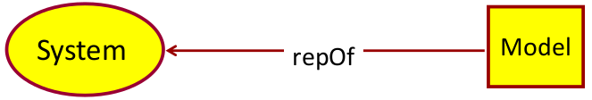
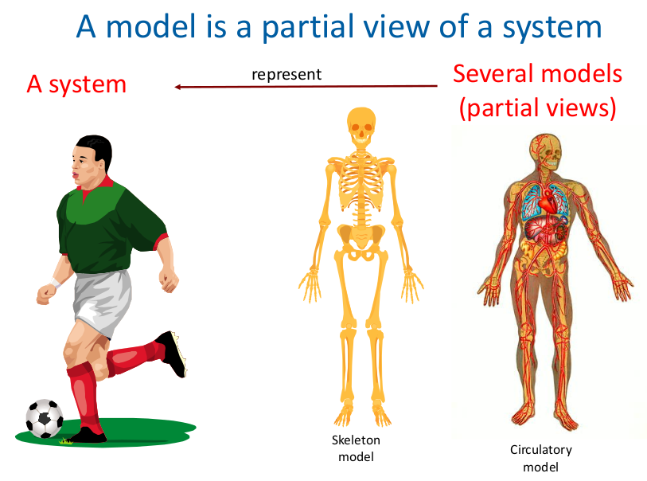
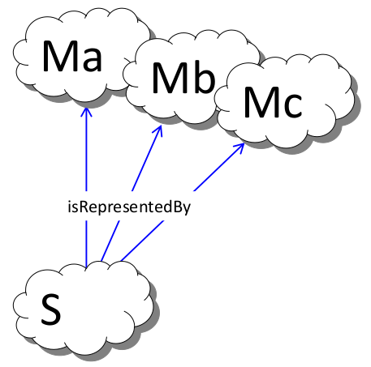
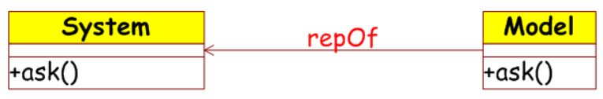
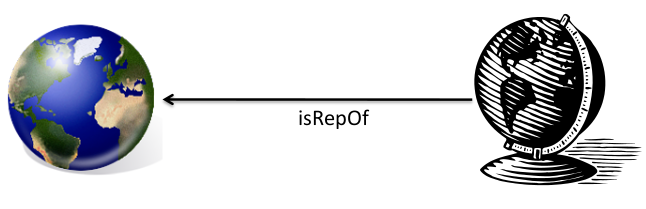
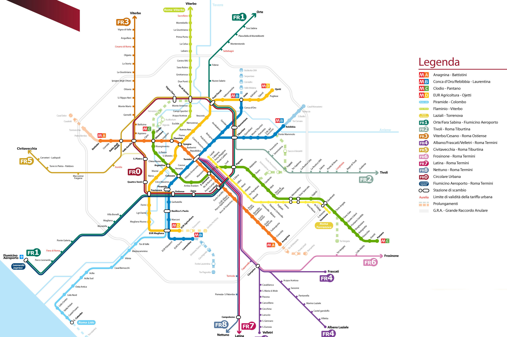
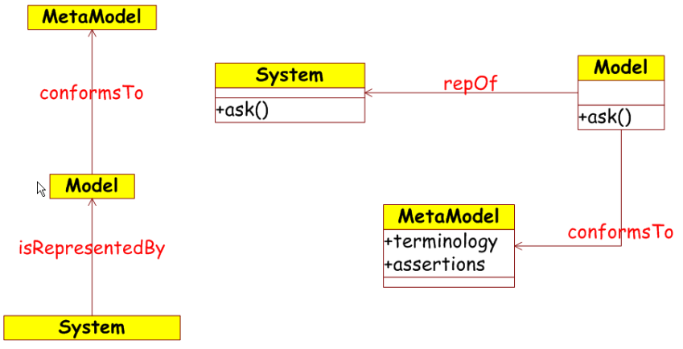
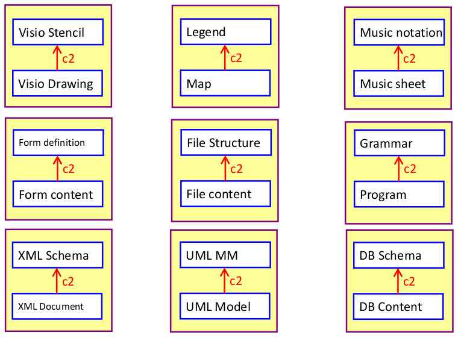

SOSE - System - Model - MetaModel
Indice
Building SW is an effortful activity
I moderni sistemi software distribuiti sfruttare svariate tecnologie, come linguaggi di programmazione, librerie middleware, linguaggi per la definizione d'interfacce, linguaggi di definizione delle basi di dati, query languages, ecc… In base al loro utilizzo, tali sistemi sono tenuti a fornire determinati livelli di qualità del servizio in termini di
- efficienza
- affidabilità
- scalabilità
- sicurezza
- ecc…
tenendo conto però dei carichi di lavoro altamente variabili e delle infrastrutture di rete best-effort.
Il processo di traduzione dai requisiti di un problema aziendale a una soluzione che utilizza tutte queste tecnologie richiede una profonda
comprensione delle numerose architetture, protocolli, linguaggi, framework e tecnologie in generale che compongono una soluzione distribuita.
La modellazione è essenziale per l'attività umana perché ogni azione è preceduta dalla costruzione (implicita o esplicita) di un modello.
Model
Innanzitutto è necessario definire (quantomeno intuitivamente) cosa è un modello.
In maniera informale, un modello è una rappresentazione astratta di un sistema.
Per sistema si intende un insieme di elementi con delle specifiche proprietà e che interagiscono tra di loro secondo determinate dinamiche.

Figura 1: Un modello che è una rappresentazione di un sistema.
La modellazione, nel senso più ampio, è l'uso conveniente di qualcosa al posto di qualcos'altro per uno scopo. Ci permette di usare qualcosa che è più semplice, più sicuro o più economico della realtà invece della realtà per qualche scopo. Un modello rappresenta la realtà per un dato obiettivo; il modello è un'astrazione della realtà, nel senso che non può rappresentare tutti i suoi aspetti in modo esaustivo. Questo ci permette di affrontare il mondo in modo semplificato, evitando la complessità, il pericolo e l'irreversibilità della realtà.
"The Nature of Modeling" Jeff Rothenberg
Un modello può anche essere visto come una visione parziale di un sistema reale, il quale raccoglie solamente le caratteristiche e dinamiche utili per lo scopo finale. Infatti, è facile osservaere, che ogni sistema ha diversi modelli che rappresentano diversi aspetti.


Principle of limited substitutability
Non basta che un modello, per essere tale, rappresenti intuitivamente alcuni aspetti di un sistema.
Come già accennato, un modello rappresenta un sistema basandosi su un problema che si vuole risolvere.
Tale problema indica in maniera implicita (o talvolta esplicita) quali aspetti del sistema sono utili da rappresentare e quali invece sono irrilevanti.
Si necessita quindi che un modello M per essere una rappresentazione di un sistema S rispetto a un dato insieme di domande Q (il nostro problema) deve,
per ogni domanda di Q, fornire esattamente la stessa risposta che il sistema S avrebbe fornito rispondendo allo stesso domanda.

Per esempio un globo (ovvero un modello della Terra) può provvedere una risposta alla domanda
posso raggiungere Tallinn da Roma senza usare una barca?
però non sarà mai in grado di rispondere alla domanda
che tempo fa oggi a Roma?

How to build and interpret a model
Ogni modello è costruito per mezzo di un linguaggio. Per esempio consideriamo una mappa dei mezzi pubblici. Su di essa saranno segnate delle linee di deversi colori e dimensioni che rappresentano le diverse tratte delle diverse tipologie di mezzi (bus, tram, treni, …). Il significato che assumono tali linee è specificato nella leggenda. Perciò una leggenda è il linguaggio al quale una mappa deve essere conferme.

Figura 6: mappa dei mezzi pubblici di Roma.
Un linguaggio non solo specifica come definire un modello e come interpretarlo, ma può anche essere visto come modello.
Infatti, nella leggenda dei mezzi pubblici del precedente esempio, vediamo che la linea in verde rappresenta il traggitto della Metro C.
Però si può osservare che una linea a sua volta è una rappresentazione astratta di una tratta di una metro, perciò a sua volta è un modello.
Possiamo quindi dire che un linguaggio è a sua volta un modello che definisce un altro modello, ovvero un meta-modello.


Figura 8: Alcuni esempi di modelli e relativi metamodelli.